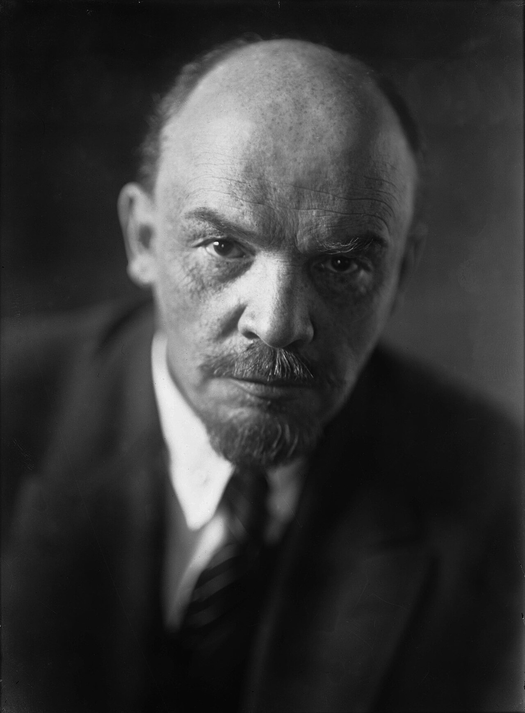
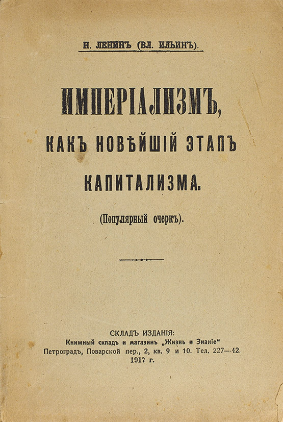

Maquette de travail. Adresse prévue : soviet.lemmatisation.com.
Hommage aux pionniers soviétiques
Hommage aux chercheurs soviétiques qui, à la fin des années 1940, auraient été les premiers à travailler sur la lemmatisation computationnelle : pour le grec ancien avec la République de Platon, pour le russe avec L’Impérialisme, stade suprême du capitalisme de Lénine.
Hypothèses de travail de Jules Deret, non vérifiées à ce jour. Références à venir.

